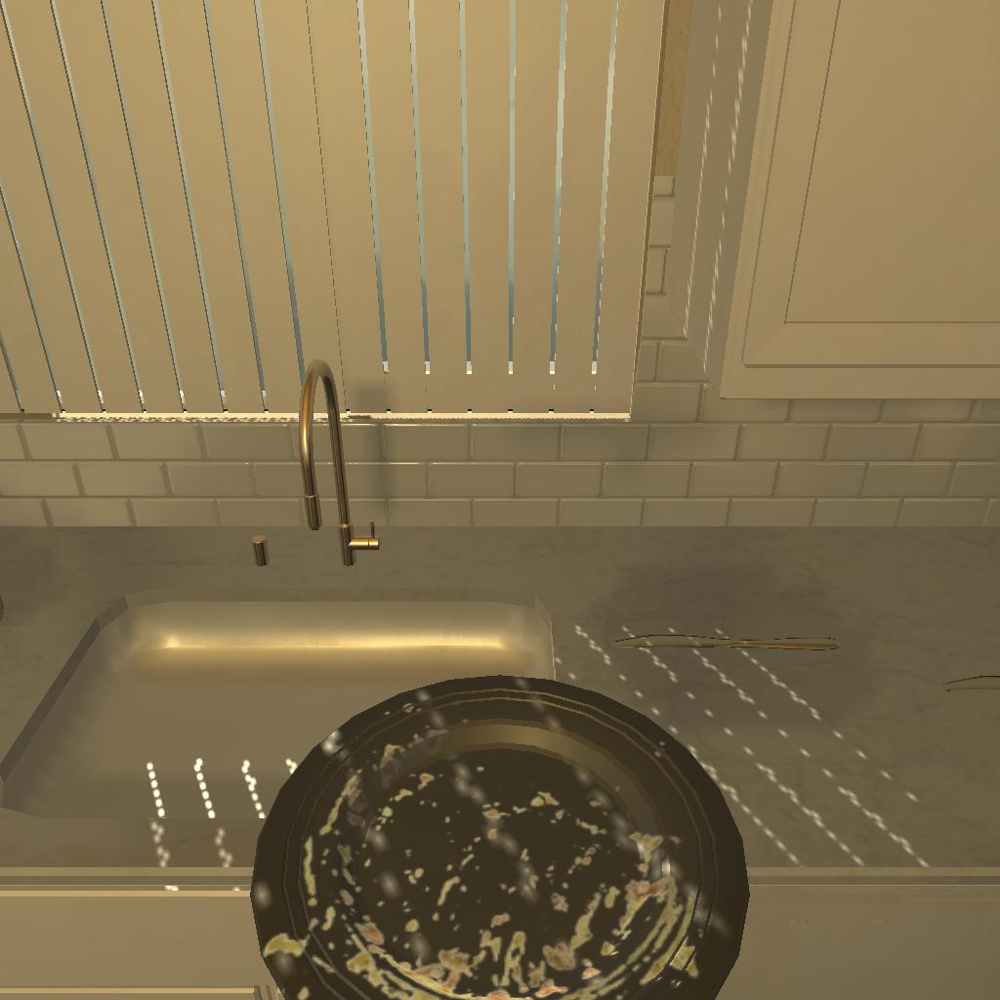

---------------------------------------------------------task: 10---------------------------------------------------------
--------------------------------------------------------------------------------------------------------------------------------------------------------------------
--------------------------------------------------------------------------------------------------------------------------------------------------------------------
Step:--------------------------------------------------------------------------11-------------------------------------------------------------------------------
----------------------------------------
VLM Prompt:
**Task**
Please perform as an embodied AI agent. Our final objective is to put a clean plate in countertop. Below is the plan for completing the task, the current observation, alongside historical data and admissible actions for the next step. Please determine the best action for the next step!
**Plan**
Below is a detailed step-by-step plan to complete the task.
1. Find a plate.
2. Pick up the plate.
3. Find a sink or basin.
4. Clean the plate with the sink or basin.
5. Find a countertop.
6. Place the cleaned plate on the countertop.
**Current Observation**
Displayed is an image capturing the current position of the agent.
**History Information**
Displayed are the previous observations with their corresponding actions.
State 1:
1. Step Index in the Plan: 1
2. Objects: Sink, Basin
3. Action: go to cabinet 1
State 2:
2. Step Index in the Plan: 1
3. Objects: Blank Wall, Countertop (partial view)
4. Action: go to cabinet 3
State 3:
2. Step Index in the Plan: 1
3. Objects: Blank Wall, Cabinets
4. Action: go to cabinet 2
State 4:
1. Step Index in the Plan: 1
2. Objects: Countertop, Various Items, Toaster
3. Action: open cabinet 2
State 5:
1. Step Index in the Plan: 1
2. Objects: Countertop, Cabinets, Toaster
3. Action: go to cabinet 4
State 6:
1. Step Index in the Plan: 1
2. Objects: Microwave, Tomato
3. Action: go to cabinet 5
State 7:
1. Step Index in the Plan: 1
2. Objects: Microwave, Tomato, Countertop
3. Action: open cabinet 5
State 8:
1. Step Index in the Plan: 1
2. Objects: Microwave, Tomato, Countertop, Cabinet 5
3. Action: go to cabinet 6
State 9:
1. Step Index in the Plan: Unknown (search for a plate)
2. Objects: Countertop, Microwave, Tomato
3. Action: open cabinet 6
State 10:
2. Step Index in the Plan: 2
3. Objects: Plate, Cabinet 6
4. Action: take plate 1 from cabinet 6
State 11:
1. Step Index in the Plan: 4
2. Objects: Dirty Plate, Microwave, Two Tomatoes, Countertop
3. Action: go to sinkbasin 1
**Admissible Actions**
(1): go to cabinet 1
(2): go to cabinet 2
(3): go to cabinet 3
(4): go to toaster 1
(5): go to cabinet 4
(6): go to cabinet 5
(7): go to microwave 1
(8): go to garbagecan 1
(9): go to countertop 1
(10): go to drawer 1
(11): go to cabinet 6
(12): go to cabinet 7
(13): go to drawer 2
(14): go to stoveburner 1
(15): go to stoveburner 2
(16): go to countertop 2
(17): go to cabinet 8
(18): go to cabinet 9
(19): go to cabinet 10
(20): go to drawer 3
(21): go to drawer 4
(22): go to stoveburner 3
(23): go to stoveburner 4
(24): go to cabinet 11
(25): go to cabinet 12
(26): go to cabinet 13
(27): go to cabinet 14
(28): go to sink 1
(29): go to cabinet 15
(30): go to fridge 1
(31): go to cabinet 16
(32): go to cabinet 17
(33): go to cabinet 18
(34): go to cabinet 19
(35): go to diningtable 1
(36): go to coffeemachine 1
(37): go to cabinet 20
(38): put plate 1 in/on sinkbasin 1
(39): clean plate 1 with sinkbasin 1
(40): clean plate 1 with sink 1
(41): examine plate 1
**Analysis Guideline**
1. Analyze the history and current observation, and then determine our current step in the plan and our current place.
2. List all visible objects related to the task in the current observation, without summarizing any as "various items."
3. Analyze the objects in the current observation based on the history and the requirements for the current step, and then determine if we can complete the step with the current observation.
4. Analyze and decide on the most appropriate action to take.
5. Summarize the analysis using the following format: "Analysis: [The summarization of the analysis], The Most Appropriate Action: (i which is the integer.): [Selected action]"
**Notes**
1. We must complete each step of the plan in order and cannot skip steps when the previous ones are not finished.
2. For "Go to" actions listed as "go to xxx [n]", interpret this as there are n distinct actions available: "go to xxx 1", "go to xxx 2", ..., "go to xxx n". Select one specific action from these options instead of using "go to xxx [n]".
3. If receptacles such as drawers, cabinets, and so forth are closed in the current observation, we may try to open them.
4. Pay attention to synonyms and ensure clarity in the terms used.
5. We must determine and provide the single action which must be in the **Admissible Actions**.
6. If there is no history available, we are at the first step and the current place is "Unknown".
**Answer**
Please select the most suitable action by following the **Analysis Guideline**, keeping the above **Notes** in mind.
----------------------------------------
----------------------------------------
VLM Response:
Analysis: The current step in the plan is to clean the plate with the sink or basin, as we have already found and picked up the plate, and the last action was moving toward the sinkbasin. In the current observation, we can see a dirty plate and a sink with running water, which indicates that we are at the correct location to perform the cleaning step. There is no need to move to any other location or open any cabinets or drawers as all necessary items for this step are already in view. Therefore, the most appropriate action is to clean the plate using the sink.
The Most Appropriate Action: (39): clean plate 1 with sinkbasin 1
----------------------------------------
----------------------------------------
>>> Refine VLM Response and Get Pure Action: clean plate 1 with sinkbasin 1
----------------------------------------
-----------------------------------------------------------------
Running time: 7.589962482452393 seconds
Total Money: 0
-----------------------------------------------------------------
-----------------------------------------------------------------
Summarization Prompt:
**Context**
Analysis: Since there is no history information, we are at the first step in the plan, which is to find a statue. The current place is unknown. In the current observation, we see a floorlamp next to an armchair with a small table that has a small object on it, which could potentially be the statue we are looking for. Since the plan requires us to find a statue first and it appears there might be one on the table next to the armchair, we should investigate this object to determine if it is the statue we need.
The Most Appropriate Action: (1): go to armchair 1
**Summary**
1. Step Index in the Plan: 1
2. Objects: Floorlamp, Armchair, Small Table, Small Object (potential statue)
3. Action: go to armchair 1
**Context**
Analysis: The current step in the plan is to clean the plate with the sink or basin, as we have already found and picked up the plate, and the last action was moving toward the sinkbasin. In the current observation, we can see a dirty plate and a sink with running water, which indicates that we are at the correct location to perform the cleaning step. There is no need to move to any other location or open any cabinets or drawers as all necessary items for this step are already in view. Therefore, the most appropriate action is to clean the plate using the sink.
The Most Appropriate Action: (39): clean plate 1 with sinkbasin 1
Please summarize the context by following above examples when providing the summary, and ensure that only the summary is included, without any extra explanation.
**Summary**
-----------------------------------------------------------------
-----------------------------------------------------------------
Summarization Response:
1. Step Index in the Plan: Uncertain, but involves cleaning a plate
2. Objects: Dirty Plate, Sink, Running Water
3. Action: clean plate 1 with sinkbasin 1
-----------------------------------------------------------------
-----------------------------------------------------------------
Text Observation:You clean the plate 1 using the sinkbasin 1.
-----------------------------------------------------------------
UNSUCCEED